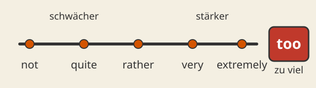

Wie sehr? Der Regler für very, quite und too
Mit einem KI-Tutor lernen
Ein KI-Tutor erklärt dir diese Seite und hilft dir bei den Aufgaben. Wähl deinen Assistenten:
Mit Claude öffnen Mit ChatGPT öffnen Mit Mistral Vibe öffnen
Du nutzt dein eigenes Konto beim Anbieter. Der Assistent ist kein Angebot von lernapps.net: lernapps liefert nur Inhalte und Aufgaben. Die Wahl gilt für alle Seiten, nur auf diesem Gerät.
Was du schon weißt

Von links: Ellie, Amir und Sophie.
Quelle: eigene Zeichnung. Lizenz: CC-BY-4.0.Aufgabe
Lösung
Peter speaks loudly. richtige Antwort
loudly sagt, wie Peter spricht. Dafür steht das Adverb.
Peter is loud.
Nach is steht der blaue Adjektiv-Anhänger.
Peter is a loud boy.
Vor einem Nomen steht der blaue Adjektiv-Anhänger.
Das Adverb sagt, wie jemand etwas tut.
Mehr dazu: Lernlandkarte Englisch · Adverbien der Art und Weise
Amir interviewt Mr Hill
Amir führt für das Schul-Radio ein Interview mit Mr Hill. Lies es ganz. Die Zeilen sind nummeriert.
1 · Amir: Mr Hill, how do you like our school?
2 · Mr Hill: I like it very much. The students are very friendly, and the building is quite old, but I love it.
3 · Amir: Is teaching English difficult?
4 · Mr Hill: Sometimes it is rather difficult, especially on Monday mornings! But my classes are extremely funny.
5 · Amir: What about homework? Is it too much for you?
| Englisch | Deutsch |
|---|---|
| building | Gebäude |
| especially | besonders |
| homework | Hausaufgaben |
| love | sehr gernhaben |
6 · Mr Hill: Marking homework is fine, but one hundred tests in one weekend is too much!
7 · Amir: Are the students too noisy sometimes?
8 · Mr Hill: Sometimes. Some students speak very quietly, but others are extremely loud.
9 · Amir: One last question: Is English hard?
10 · Mr Hill: It is quite easy at the beginning and very hard at the end. So practise every day!
| Englisch | Deutsch |
|---|---|
| mark | korrigieren und benoten |
| noisy | laut / unruhig |
| beginning | Anfang |
| practise | üben |
Hast du das Interview verstanden?
Aufgabe
Lösung
Richtige Antwort: Die Aussage stimmt nicht.
Manche Schüler sprechen sehr leise, andere sind extrem laut. Das steht in Zeile 8.
Aufgabe
Lösung
Zeile 6: … one hundred tests in one weekend is too much! richtige Antwort
too much heißt „zu viel“.
Zeile 4: … it is rather difficult …
In dieser Zeile geht es um den Englischunterricht, nicht um Tests.
Zeile 10: It is quite easy at the beginning …
Hier spricht Mr Hill über das Lernen von Englisch.
Zu viel sind die Tests in Zeile 6.
Schau in den Text
Mr Hill stuft vieles ab. Manche Schüler sprechen very quietly, das Gebäude ist quite old, der Unterricht ist rather difficult, andere sind extremely loud. Diese Wörter heißen Gradadverbien. Sie sitzen auf einem Regler: Je weiter rechts, desto stärker. Sie stehen vor dem Adjektiv oder Adverb, das sie abstufen. Das Wort too ist das rote Warnzeichen: Es heißt zu, also mehr als gut.

Von not bis extremely wird es stärker. too ist ein Warnzeichen für zu viel.
Quelle: eigene Zeichnung. Lizenz: CC-BY-4.0.| Wort | Beispiel |
|---|---|
| quite | The lake is quite deep. |
| rather | The path is rather steep. |
| very | The cake is very big. |
| extremely | The sun is extremely hot. |
| too | The coffee is too strong. |
Merke
Gradadverbien stehen vor Adjektiven und Adverbien: very friendly, very quietly. Vor einem Verb stehen sie nicht: nicht „I very like it“, sondern „I like it very much“. Und too heißt zu, nicht „sehr“: Der Kaffee ist too hot, du kannst ihn nicht trinken.
| Englisch | Deutsch |
|---|---|
| quite | ziemlich |
| rather | ziemlich, eher |
| very | sehr |
| extremely | äußerst |
| too | zu |
| not | nicht |
| boring | langweilig |
| empty | leer |
| heavy | schwer |
| bag | Tasche |
| park | Park |
| film | Film |
| street | Straße |
| task | Aufgabe |
| football | Fußball |
Übung
Aufgabe
Lösung
Richtige Antwort: 1. The soup is quite cold., 2. The soup is rather cold., 3. The soup is very cold., 4. The soup is extremely cold.
Auf dem Regler stehen quite, rather, very und extremely in dieser Reihenfolge.
Aufgabe
Wähle das richtige Wort.
Tipp
Zu heißt too. Vor Adjektiven steht very, aber vor einem Verb very much.
- Der Tee ist zu heiß zum Trinken. → The tea is … hot to drink.
- Die Aufgabe ist sehr leicht. → The task is … easy.
- Ich kenne ihn sehr gut. → I know him … well.
- Die Straße ist ziemlich lang. → The street is … long.
Lösung
- The tea is too hot to drink.
- The task is very easy.
- I know him very well.
- The street is quite long.
Aufgabe
Schreibe den Satz auf Englisch.
Tipp
Prüfe, ob du zu, sehr oder ziemlich sagen willst.
- Die Suppe ist ziemlich heiß.
- Peter spricht äußerst laut.
- Das Wasser ist zu kalt.
- Er hilft uns sehr (nutze very much).
Lösung
- The soup is quite hot. (auch richtig: The soup is rather hot.)
- Peter speaks extremely loudly.
- The water is too cold.
- He helps us very much.
Aufgabe
In jedem Satz steckt ein Fehler. Schreibe den Satz richtig.
Tipp
Gradadverbien stehen vor Adjektiven und Adverbien.
- She very loves her dog.
- The cake is very much sweet.
Lösung
- She loves her dog very much.
- The cake is very sweet.
Aufgabe
Schreibe den Satz auf Englisch.
- Das Buch ist zu lang.
- Das Spiel ist sehr spannend.
Lösung
- The book is too long.
- The game is very exciting.
Aufgabe
Hör zu und schreibe, was du hörst.
- KI
- KI
- KI
Lösung
- The film is rather boring.
- My bag is extremely heavy.
- The jacket is too small for me.
Selbst sagen und schreiben
Aufgabe
Hör zu, sprich nach und nimm dich auf. Vergleiche dann mit dem Original.
Tipp
Hör den Satz zuerst. Sprich dann langsam nach.
- The park is quite empty.KI
- That test was very hard.KI
- She sings extremely well.KI
Zum Aufnehmen braucht diese Aufgabe JavaScript. Die Beispiele kannst du auch ohne anhören.
Lösung
- The park is quite empty.
- That test was very hard.
- She sings extremely well.
Offene Aufgabe
Amir fragt dich im Interview: Wie findest du die Schule, die Hausaufgaben und das Essen in der Kantine? Antworte in drei bis fünf Sätzen und stufe mit Gradadverbien ab.
Eine gute Antwort enthält:
Lösung
School is quite good. The homework is rather boring, but sometimes it is too much. The lunch is extremely tasty.
Wie es weitergeht
Das Interview kommt gut an. Nach der Sendung räumt die Gruppe die Spenden für den Basar der Schule auf. Es gibt viele rote und blaue Sachen, und Sophie muss sie ordnen, ohne jedes Mal das Nomen zu wiederholen. Auf der nächsten Seite lernst du, wie das geht.
Fehler gefunden oder eine Idee für diese App?